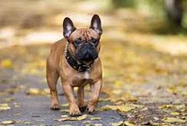

Bulldog Francês
O Bulldog Francês é um cão compacto, musculoso e carismático que conquistou corações em todo o mundo. Apesar de seu tamanho pequeno, possui uma grande personalidade cheia de charme e brincadeiras. Ideal para a vida urbana em apartamentos, ese cão é o companheiro perfeito para quem busca um bom amigo leal.

Características Gerais
| Raça | Porte | Temperamento | Expectativa | Energia | Apartamento |
|---|---|---|---|---|---|
| Bulldog Francês | Pequeno | Brincalhão & Adaptável | 10–12 anos | Média | Sim |
Tags Principais
Origem
- País de Origem: França
- Século de Desenvolvimento: XIX
- Propósito Original: Cão de companhia e entretenimento
- Ancestrais: Resultado do cruzamento entre Bulldogs ingleses e Terriers franceses
- Reconhecimento: Oficialmente reconhecido como raça em 1898 na França
O Bulldog Francês foi desenvolvido na França durante o século XIX, originado do cruzamento entre Bulldogs ingleses e Terriers locais franceses. Tornou-se extremamente popular na sociedade parisiense e se mantém como um dos cães de companhia mais queridos em todo o mundo.
Comportamento & Cuidados
Temperamento
Bulldogs Franceses são cães extremamente carismáticos, afetuosos e brincalhões. Adoram estar perto de seus donos e são excelentes com crianças e outros animais. Possuem uma personalidade grande em um corpo pequeno, sempre querendo fazer graças e chamar atenção.
Exercício
Esses cães possuem níveis de energia moderados. Precisam de passeios diários, mas não requerem exercício intenso como outras raças. São perfeitos para apartamentos urbanos. Importante evitar atividade vigorosa em climas quentes devido à sensibilidade respiratória.
Cuidados Especiais
Bulldogs Franceses têm focinho curto e requerem cuidados especiais em climas quentes. Banhos regulares, limpeza de dobras de pele e monitoramento de saúde respiratória são essenciais. Nécessitam acompanhamento veterinário regular para prevenir problemas oftalmológicos.